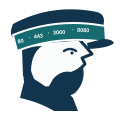

Background
Before this change, the desktop application already had a coherent layout, but its colors lived directly inside component rules. That makes an experiment deceptively expensive: changing “green” means finding every green, deciding whether it represents an action, selection, success, or focus, and hoping no state was missed. The packaged application also inherited Electron's generic icon, while the selected PortReeve portrait existed only as exploratory artwork.
The security boundary that already existed
The renderer does not load arbitrary files. Its custom app:// protocol accepts only the PortReeve hostname, only GET requests, only canonical paths beneath a trusted root, and only an extension allowlist. Branding must cross that boundary without turning the renderer root into a general-purpose file server.
Intuition
cream PNG + SVG
original RGB + alpha
transparent SVG + PNG
Fogbound tile + ICNS
The essential move is to separate provenance, reusable artwork, and bounded application icons. The checksum-locked 1254px cream artwork remains the archival authority. A second checksum-locked PNG preserves its RGB artwork while adding only an exterior alpha mask. The header, lockup, and reusable PNGs consume that transparent master; the macOS icon intentionally places it on a Fogbound Coast tile. This also corrects an earlier hand-authored SVG whose shapes did not match the selected artwork.

#12344C
#176B70
#EDF2F3
#FAFCFC
#C75532
Code walkthrough
1. Semantic theme
theme.css names canvas, surfaces, text, borders, actions, status colors, code output, focus, shadows, and overlays. Component CSS now consumes those names. A test rejects independent hexadecimal or RGB literals in component styles and calculates WCAG contrast for the actual foreground/background pairs.
:root {
--pr-color-logo-ink: #12344c;
--pr-color-primary: #176b70;
--pr-color-canvas: #edf2f3;
}
button.primary {
background: var(--pr-color-primary);
color: var(--pr-color-on-primary);
}
2. Approved artwork and generation
The approved artwork was generated as a PNG; no original vector SVG existed. portreeve-approved-original.png is therefore the checksum-locked archival master, including its cream background. portreeve-transparent-master.png is the production cutout. The generator embeds each master in its intended standalone SVG, then renders transparent common PNGs and lockup, the bounded 1024px app tile, ten conventional iconset files, a compiled ICNS, and a visual contact sheet. A pixel comparison between the recovered source and the user's reference screenshot reports RMSE 0 (0).
3. Narrow renderer route
The protocol has two independent canonical roots. HTML, CSS, and JavaScript remain confined to the renderer root. Only PNG and SVG are accepted beneath /branding/. Traversal and symlink escapes are rejected after realpath, so an allowed extension cannot smuggle an outside file through the route.
app://portreeve/index.html → renderer root → HTML/CSS/JS app://portreeve/branding/mark.svg → branding root → SVG/PNG app://portreeve/branding/../x.svg → canonical escape → 404
4. Packaging and proof
The desktop stage now copies assets/ and passes PortReeve.icns to Electron Packager. Verification compared the packaged icon byte-for-byte with the committed source, inspected the ASAR inventory, and launched the packaged arm64 application. The header mark is 96px rather than 64px, making the port sequence just legible without overpowering the title. Playwright checks at 1224px and the 720px minimum width confirm that the larger mark, Refresh control, navigation, and content remain balanced.